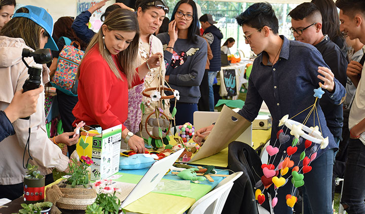
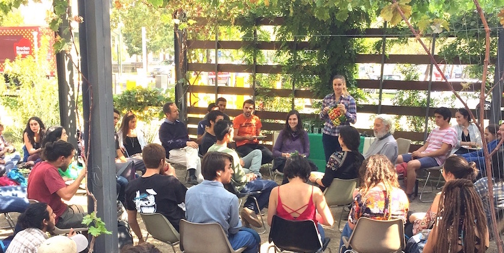
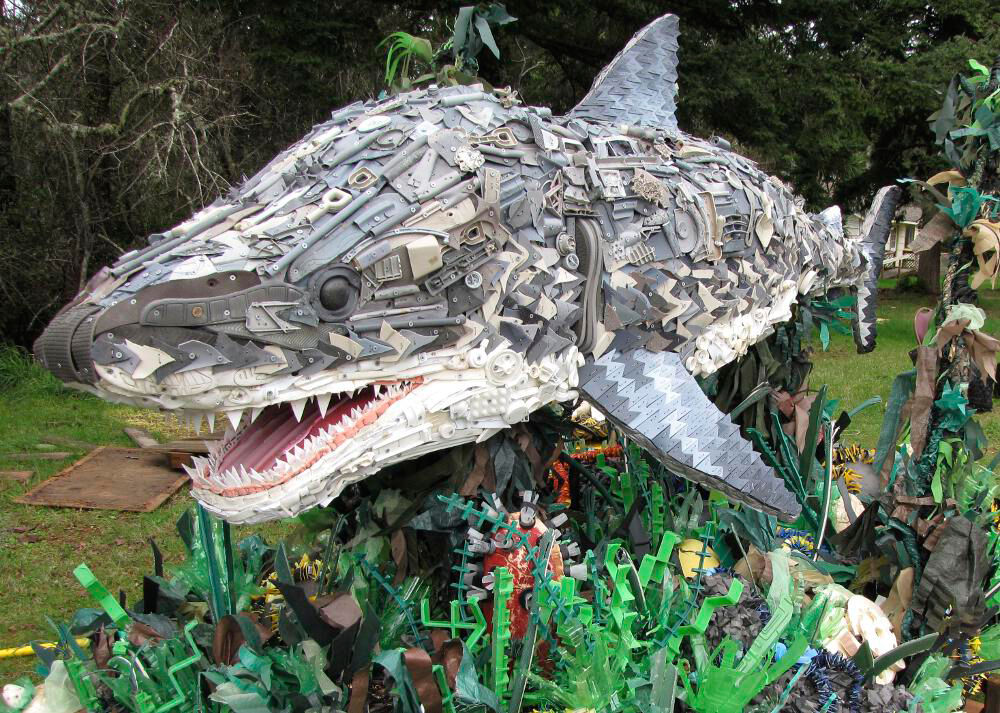
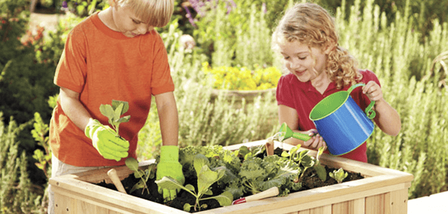
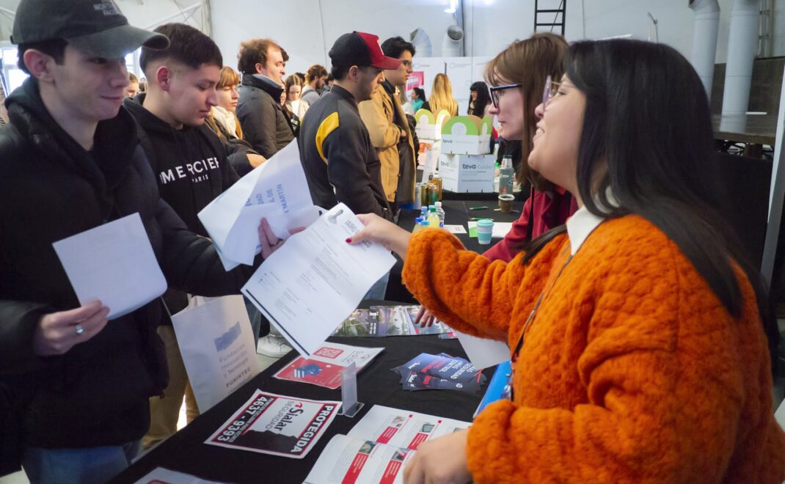

Hacer del cuidado ambiental un hábito
Es sabido que la juventud es el futuro, y para lograr tener uno mas involucrado con la naturaleza y sus cuidados,
debemos comenzar una educación ambiental en el contexto educativo.

Proponemos que el ambiente educacional realice actividades dinámicas para motivar a los chicos a interesarse
en el tema y las pongan en practica con frecuencia en el día a día
Algunas prácticas que planteamos son:
- Clasificación de residuos 🍾
- Aprender a ahorrar los recursos que utilizamos en cantidad a diario 🚿
- Fomentar el uso de productos ecologicos ♻️
- Ser respetuoso con el medio ambiente 🌱
¿A quien queremos que llegue el mensaje?
Queremos influir a los jovenes a despertar una conciencia ambiental que siempre este presente en ellos.
Ademas, invitamos a los profes a participar tomando riendas en el asunto y que le enseñen a las futuras
generaciones a como tener una buena relación con el ambiente

Un gran cambio comienza con una pequeña acción. Estas a un click de marcar la diferencia
Sumate
Empleo verde
Abrimos puertas al mundo laboral verde, para que las personas crezcan a la par de la naturaleza.
Fomentamos una formación profesional orientada al cuidado ambiental y ampliar la oferta de
trabajos sustentables.
Al haber mas empleos destinados a proteger el medio ambiente, no solo ayudamos a nuestro planeta, sino
tambien a la población que lo habita.

Empleo Verde consiste en crear empleos dignos con el propósito de sanar y proteger nuestro entorno .
Son trabajos pensados para ayudar a las empresas a contaminar menos, reducir sus residuos y frenar las emisiones tóxicas.
Desde el reciclaje hasta el uso de energías limpias, estas oportunidades son el motor para construir un futuro
verdaderamente sostenible.
¿A quien queremos que llegue el mensaje?
Ofrecemos trabajos 100% limpios y sin poner tu salud en riesgo constantemente, ya que estaras lejos de microplasticos o
desechos toxicos.
Si estas buscando un pasatiempo donde tu mayor desafio es cuidar tu planeta, estas en el lugar correcto.
Ademas, buscamos que las grandes empresas creen cupos de empleos verdes dentro de ellas para aumentar su oferta laboral
y crear oportunidades para todos
Un gran cambio comienza con una pequeña acción. Estas a un click de marcar la diferencia
Sumate
Festival ambiental
¡En nuestro festival hay de todo un poco y queremos mostrar que cuidar el medio ambiente, tambien puede ser
divertido!
Realizamos eventos verdes a lo largo del año buscando enseñar prácticas responsables con el ambiente
y alentando a los participantes a disfrutar de un evento inolvidable.
Llamamos a emprendedores sustentables, donde aqui su trabajo es la mayor exibición y recibe
una gran atención.

Tambien encontraras:
- Charlas informativas sobre el tema

- Muestras de arte reciclado

- Actividades verdes

- Ofertas de empleos verdes

- Experimentos ecologicos

- Una buena banda para ambientar el lugar 😎
¿A quien queremos que llegue el mensaje?
Si te interesa traer tu emprendimiento sustentable, colaborar o simplemente venir a divertirte en el mundo del cuidado
del medio ambiente, no esperes mas y anotate!
Un gran cambio comienza con una pequeña acción. Estas a un click de marcar la diferencia
Sumate
 Programas
Programas